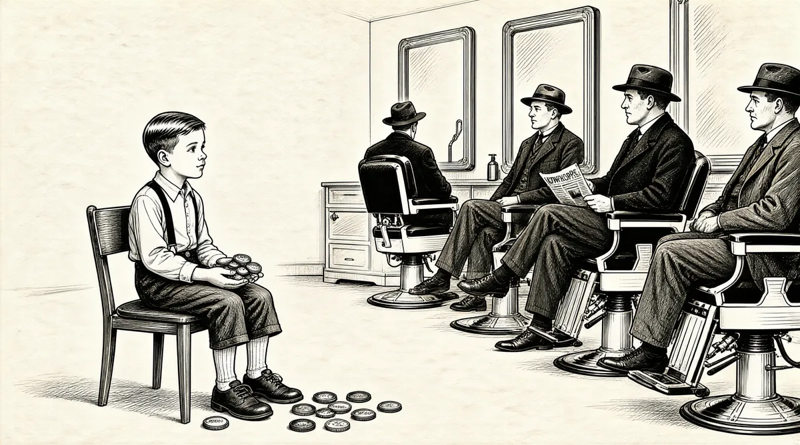

第7章 休战纪念日

当沃伦于1936年开始在罗斯希尔学校读一年级的时候，他立刻就喜欢上了上学。1至少，上学可以使他有一部分时间不用和母亲一起待在家里。学校为沃伦打开了一个全新的世界，而且他还很快交了两个朋友：鲍勃·拉塞尔和斯图·埃里克森。沃伦和鲍勃——沃伦叫他鲁斯——开始一起步行去学校。有时候，沃伦放学后会去鲁斯家；还有些时候，斯图——他家住在一栋普通的木房子里——会去沃伦的新家，那是一座砖房子，在欢乐谷乡村俱乐部社区。沃伦每天放学后基本上都有事做，一直做到父亲下班回家。沃伦总是和其他孩子待在一起，他们让他觉得很安全。
沃伦和鲁斯会在鲁斯家的门廊前坐好几个小时，看着军事大街的来往车辆。他们在笔记本上一栏一栏地记下穿梭车辆的车牌号。家里人觉得这个癖好很奇怪，但认为这只是男孩子对数字的喜爱。他们知道沃伦喜欢计算车牌号上的数字和字母出现的频率。沃伦和鲁斯从未解释过他们这么做的真正原因。鲁斯家房前的街道是唯一一条进出社区的道路，道格拉斯县级银行就在这里。沃伦让鲁斯确信，如果某天银行被抢了，警察可以利用车牌号抓住抢匪。而只有他和鲁斯握有警察用以捉拿罪犯的证据。
沃伦喜欢收集、计算和记忆与数字有关的所有事情。他非常热衷于集邮和收藏钱币。他会计算字母在报纸和《圣经》里出现的频率。他喜欢看书，大把的时间都用来阅读从本森图书馆借来的书。
不过，车牌号游戏的反犯罪和戏剧潜力——这是他家里人和鲁斯从不曾了解的——折射出了沃伦的其他性情。沃伦喜欢扮演警察，喜欢能让他受到关注的几乎所有事情，包括扮演不同的角色。沃伦上幼儿园时，霍华德从纽约出差回家，会给沃伦和多丽丝带回戏服。沃伦会化身为印第安酋长、牛仔或是警察。他一踏入校门，就开始提出自己在戏剧方面的构想。
不过，沃伦最喜欢的是竞争性游戏，即使他只和自己竞争。从弹珠浴缸障碍赛到悠悠球，再到波洛球游戏——用橡皮筋将球从木板上发射出去，如此反复多次。每逢周六晚上，在本森剧院，在播放不同电影之间的空隙，沃伦会和其他孩子站在台上比赛，看谁能让球滚得更远。最后，其他人都走下台，筋疲力尽，只有沃伦一个人在台上，继续玩儿着波洛球。
沃伦和伯蒂关系特别亲密，他喜欢逗她。沃伦喜欢叫伯蒂“胖乎乎”，因为这会令伯蒂气急败坏；沃伦还会捉弄伯蒂，让她在晚餐桌上唱歌，这可是有违家规的。沃伦和伯蒂一起玩儿游戏，2但通常不让她赢，即使伯蒂比他小3岁。不过，沃伦也有温柔的一面。当伯蒂对母亲感到恼火的时候，她会把自己很宝贝的迪迪娃娃扔到废纸篓里。一到这个时候，巴菲特便会把娃娃“救”出来，拿回伯蒂的房间。“我在废纸篓里发现了这个，”他说，“你不想让它待在废纸篓里，是吧？”即使伯蒂只是一个孩子，她也知道她的哥哥行事如何老练、如何有技巧。
从另一方面来说，伯蒂非常自信，无所畏惧，多丽丝和沃伦认为，这可能是利拉很少对伯蒂发火的原因。伯蒂对此有自己的看法，她认为是因为自己能一直保持被利拉重视和喜欢的样子。
对利拉来说，最重要的是他人的尊重，这是沃伦后来慢慢称为“外部记分卡”的东西。利拉总是担心邻居们的想法，然后唠叨着女儿们要穿着合适、言行得体。“为了做事得体，我总是小心翼翼，我不喜欢这样。”对利拉的长篇絮叨，伯蒂如是说。
多丽丝性格叛逆。从小时候开始，她就表现出优雅细腻的品位，且容易进入兴奋状态。这使她不同于沃伦的稳重路线和吝啬作风。奇异、时髦和新颖的东西会吸引她，而她的母亲则显得谦虚、朴素，不重打扮。因此，多丽丝看上去被认为大大冒犯了母亲，这两人经常不和。利拉偶尔发作的脾气似乎不逊于从前。多丽丝出落成了一个漂亮的姑娘，而“她越漂亮”，沃伦说，“情况就越糟糕”。
沃伦很早就懂得与人相处的诀窍，但同时，他也是一个好强和早熟的孩子，智力很不错，但体育方面欠佳。8岁的时候，他的父母送了他一套拳击手套，他上了一堂拳击课之后就再也没有戴过它们。3他学过溜冰，但是他的脚踝发抖。4他没有加入其他男孩的街头游戏，即使他喜欢运动，协调性也不错。他唯一不厌恶的运动是打乒乓球。巴菲特家买回一张乒乓球台后，沃伦会没日没夜地在球台上打球，对手是任何和他玩儿球的人——父母的朋友、学校的同学——最后练到他的球极有杀伤力。如果有人看不起他，沃伦很容易大哭；他一直很努力地想要得到他人的喜爱，并和他人融洽相处。尽管沃伦总是很快乐，但他的朋友还是感到他身上有一种孤独。
1937年，巴菲特家给三个孩子拍了一张合影。伯蒂看起来很高兴，多丽丝则一副可怜兮兮的苦恼样。沃伦的样子——手里紧紧抓着他的最爱，一个外面镀镍的零钱罐，他的姑姑艾丽斯送他的礼物——看起来远远没有圣诞节应有的快乐。
沃伦8岁的时候，斯塔尔家又发生了不幸的事，这使得利拉更下定决心，要让巴菲特全家看起来就像是典型的完美家庭。利拉的母亲斯特拉的状况恶化，家里把她送到诺福克州立医院，即内布拉斯加精神病院，利拉的外祖母就是在这家医院过世的。5利拉的姐姐在医院里也住了三个月，阑尾穿孔之后，她差点儿死于腹膜炎。之后，伊迪丝决心结婚，继续过日子。她嫁给了一个让她开心但背景可疑的男人。这并没有改变利拉对姐姐的不良印象，对利拉而言，她姐姐似乎对冒险的兴趣总是大于对责任的兴趣。
与此同时，霍华德被选入校董事会，一个令家里人感到自豪的新角色。6巴菲特家在进步，而斯塔尔家在后退，在这种交叉混杂中，沃伦大部分时间都待在外面。他四处拜访邻里，和其他人的父母交朋友，在他们家里听政治演讲。7散步的时候，沃伦开始收集瓶盖。他到镇上所有的加油站，从冰柜下面收集瓶盖，因为顾客们“砰”的一声打开汽水后，瓶盖都会落到冰柜下面。在巴菲特家的地下室，瓶盖堆得越来越多：百事、草根啤露、可口可乐和姜啤汽水等的瓶盖应有尽有。沃伦着迷地收集着瓶盖。免费的信息到处都是，无人问津——没有人想要这些东西！沃伦觉得这是一件让人吃惊的事。晚饭过后，他在客厅地板上铺满报纸，然后把收集的瓶盖摊放在上面，开始分类、计数，分类、计数……8数字告诉他哪一种软饮料更畅销。不过，沃伦同时也很享受分类、计数的过程，他把这当作放松的方式。当他不摆弄瓶盖的时候，他喜欢整理收集的钱币和邮票。
学校是最让他感到无聊的地方。沃伦和鲍勃·拉塞尔、斯图·埃里克森同在西克斯顿小姐的四年级班，为了打发时间，他玩儿数学游戏，在脑子里数数。不过，他喜欢地理，并发现拼字是件让人兴奋的事，尤其是“拼字比赛”——6个一年级学生和6个二年级学生进行比赛。获胜的一方可以和三年级学生再进行比赛，以此类推。理论上来说，一年级学生可以连胜5场，最终击败六年级学生。
我想在拼字比赛中超过多丽丝，而伯蒂想超过我。
唉，巴菲特家的三个小孩都非常聪明，他们想的超越从未发生过。
还没有什么事能像这件事一样吸引我们。
沃伦喜欢拼字游戏，但是除了在黑板上演算算术题之外，没有其他东西能刺激他的学习欲望。从二年级开始，学生们都会跑到黑板前比赛，一次两人。一开始，他们在规定时间里比赛加法，然后是减法，最后是乘法和除法，把自己计算所得的数字在黑板上写下来。沃伦、斯图和鲁斯是班里最聪明的学生。一开始，他们得分相同，但一段时间之后，沃伦略有领先；又过了一段时间，沃伦又领先了一些。9
终于有一天，西克斯顿小姐请沃伦和斯图放学后留下。沃伦的心怦怦直跳。“我们在想，我们到底做错了什么。”斯图说。西克斯顿小姐没有责骂他们，相反，她请他们从教室一边的4A区换到了另一边的4B区10——他们跳了半级。鲍勃·拉塞尔被甩到了后面，拉塞尔太太对此很生气，满嘴抱怨。
沃伦仍和斯图、鲍勃保持朋友关系，但和他们分开交往：和以前一样，虽然他们都是他的朋友，但斯图和鲍勃之间并不是真正的朋友。
沃伦准确掌握细节的爱好继续在发展。他的父母和朋友（都叫他“沃伦尼”）在他的聚会游戏上都会被踢出局——游戏是说出州首府的名字。读五年级的时候，沃伦已经完全沉浸于1939年《世界年鉴》中，这本书很快就成了他最爱的一本书。沃伦记得每个城市的人口数。他开始和斯图比赛，看谁说出的人口超过100万的城市数量多。11
不过，在某一天晚上，可怕的肚子痛令沃伦无法看《世界年鉴》和玩儿瓶盖。医生上门进行了诊治，然后就回家了。但是，医生对这次上门诊断不放心，又回头把沃伦送到了医院。就在那晚，沃伦因阑尾穿孔接受了手术。
医生差一点儿就耽误了沃伦的病。沃伦在教会医院躺了几周，病情不轻。不过在修女的照顾下，他很快就发现医院是一个舒服的避难所。当身体开始恢复的时候，其他的乐趣也随之而来。《世界年鉴》被带过来供他学习。他的老师让班里所有的女孩给他写慰问信。12非常了解自己外甥的伊迪丝姨妈给他买了一套指纹识别玩具。他很懂得怎么玩。他哄诱每个顺路来到他房间的修女，让她们的手指蘸上墨水，提取指纹。回家后，沃伦把收集到的指纹仔细地整理好。家里人觉得他的这个行为非常有趣。有谁会想要修女的指纹？但是，沃伦的理论是，修女中终有人会犯罪。而如果这事发生，只有他，沃伦·巴菲特，有线索识别罪犯的身份。13
出院后不久，1939年5月的一天，天气异常寒冷，刮着风，父母亲让沃伦穿戴整齐。然后，他的祖父出现了。身着威严的单排扣西服，欧内斯特·巴菲特就如画中那备受尊重的人物，非常符合其奥马哈扶轮社主席的身份。
欧内斯特和孩子相处很有一套。尽管他很严厉，但是他喜欢哄他的孙子孙女们。伯蒂很崇拜他。“我们今天要去芝加哥，沃伦。”欧内斯特宣布。他们登上火车，去看芝加哥小熊队和布鲁克林道奇队的比赛。这是一场持久、难分高下的棒球赛，双方打成9∶9，最后因为天色太黑而停止比赛。整场比赛持续了4小时41分钟。14在沃伦首次观看了美国职业棒球联赛后，欧内斯特给沃伦买了一本价值25美分的介绍1938年棒球赛季的书。沃伦激动不已，至今还记得这本书。
对我来说，那是我最珍贵的一本书。我知道了每个队的每个球员的经历，我可以清楚地告诉你书中的每一个字，我在梦里都想着这本书。
沃伦的姑姑艾丽斯给了他一本关于桥牌的书——这本书可能是卡伯特森的《桥牌全攻略》。15桥牌是一种社交性的心理游戏，玩儿游戏的时候，发现问题和解决问题一样重要。在当时，桥牌风靡全美，沃伦发现，这个游戏比国际象棋更适合他。16
沃伦的另一个兴趣是音乐。他学小号学了好几年，他的偶像包括小号手巴里·贝里根和哈里·詹姆斯。虽然玩儿音乐就意味着要和母亲待在家里——沃伦得努力取悦一个根本哄不高兴的人——不过，沃伦还是持之以恒。在经受利拉长时间、令人讨厌的尖刻评论之后，他获得了回报：被选去参加学校的休战纪念日典礼。
每年11月11日，第一次世界大战达成停战协议的周年纪念日，罗斯希尔的全体学生都要到体育馆举行典礼，以纪念战争中牺牲的战斗英雄。在学校的这项传统中，小号手们会站在体育馆边上的门口，一个接一个地用小号吹出旋律。
沃伦的小号吹奏技术足以令他胜任吹奏其中的一部分。典礼当天早上起床后，一想到要在全校面前演奏，沃伦就很高兴。重要的时刻来了，他也准备就绪。
沃伦拿着小号站在门口，第一名小号手开始吹响音符，但是，在吹第二个音的时候，这位小号手吹错了。
我傻眼了，因为我不知道要怎么接着吹。他们没让我作这种准备。这可是我的重大时刻啊。
沃伦本应重复吹奏第一名小号手的段落，可是现在沃伦是应该重复第一位小号手的错误，还是吹得和他不同，令他难堪？沃伦觉得自己完了。这一幕永远烙在了他的记忆中，但他却记不得之后的行动。数年之后，他接下来的反应和行为——假设他还是吹响了号——已经变成了一片空白。
沃伦学到了一个教训：正如这次小号演奏一样，生活可能看起来很简单——但是，当另一个家伙吹错的时候，情况就不是这样了。
[1]草根啤露，美国人常喝的一种用植物根部酿造的无醇饮料，有点儿像可乐。——译者注